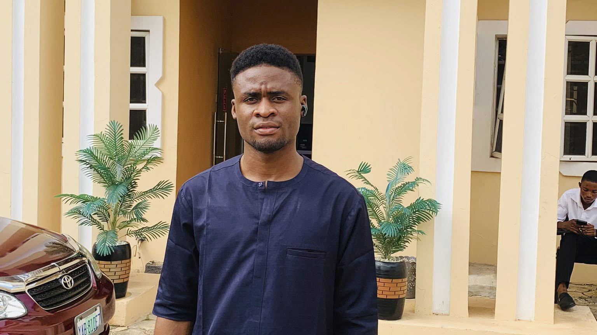

Coal City University, Enugu
Computer Science
Currently developing my knowledge in programming, web development, databases and computer systems.

Hello, I'm Meshack Ogonna.
I am a Computer Science student, web developer, football administrator and digital content creator.
I am passionate about technology, football and using digital solutions to solve real-world problems.
My journey combines my passion for technology, football and personal development. I enjoy learning new skills and applying them to practical projects.
My journey has been shaped by my interest in both technology and football. Over time, I have developed experience in football administration, content creation, social media management and web development.
I enjoy learning new skills and turning what I learn into practical projects.
Computer Science
Currently developing my knowledge in programming, web development, databases and computer systems.
Building modern websites and web applications.
Football administration, coaching and player development.
Content creation and social media management.
My goal is to become a highly skilled technology professional while continuing to develop my career in football.
I want to combine technology, football and leadership to create projects that make a meaningful difference.